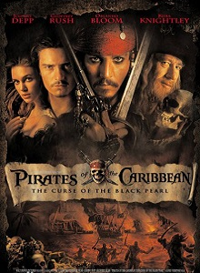

- 影片名称：加勒比海盗：黑珍珠号的诅咒
- 上映时间：2003年7月9日(美国)
- 类别：动作 冒险 奇幻
- 语言：英语
- 主演：约翰尼·德普 杰弗里·拉什 奥兰多·布鲁姆 凯拉·奈特莉
- 导演：戈尔·维宾斯基
- 影片简介：
-
故事发生在传说中海盗最活跃的加勒比海。这片神秘的海域位于大西洋西部、南北美洲之间，那里碧海蓝天，阳光明媚，海面水晶般清澈。17世纪的时候，这里更是欧洲大陆的商旅舰队到达美洲的必经之地，所以，当时的海盗活动非常猖獗，不仅攻击过往商人，甚至包括英国皇家舰队。
英俊迷人的杰克·斯伯洛，是活跃在加勒比海上的年青海盗，拥有属于自己的"黑珍珠号"海盗船。对他来说，最惬意的生活就是驾驶着“黑珍珠”在加勒比海上游荡，自由自在的打劫过往船只。但不幸的是，这悠闲洒脱的日子到底还是结束了——他遭到了海盗头目巴伯萨的欺骗，连自己珍爱的"黑珍珠号"海盗船也被巴伯萨偷走。
统领着一群海盗的巴伯萨是一个无恶不作的坏蛋，他不但打劫财物，还把船上的所有人都斩尽杀绝，不留活口。过往船只经过加勒比海时都胆战心惊，最怕遇上巴伯萨一伙。抢劫了杰克的"黑珍珠号"海盗船后，巴伯萨更加猖狂，在加勒比海上横行霸道，一时成为整个加勒比海的霸主。
随着自己的势力日渐强大，巴伯萨妄想长生不死的贪婪野心也在不断膨胀。他企图解开传说中魔咒金币的秘密使自己获得永生，却想不到反而遭到了邪恶的诅咒--每当月圆之夜，巴伯萨和其他“黑珍珠号”上的船员都会变成骷髅，而且终身禁欲髅，不能享受性和美食，甚至不能正常的走路。
变成了不死骷髅的巴伯萨，率领着“黑珍珠”号在加勒比海上更加肆无忌弹。一次，他们把船开进了皇家港并袭击了小镇，还绑架了总督的女儿伊莉莎白·斯万——因为这个女孩的脖子上佩带着一枚神秘金币。和伊莉莎白青梅竹马的铁匠学徒威尔·特纳，眼看自己心爱的女孩被海盗抓走，悲愤不已。恰巧的是，曾经身为"黑珍珠号"海盗船船长的杰克·斯伯洛，也由于自己的海盗身份被关进了这个海边小城的监狱。
铁匠威尔想方设法救出了狱中的杰克，接着，两人偷来英国皇家舰队最快的"拦截号"军舰。威尔为了救回深爱的女孩伊莉莎白，杰克为了夺回原本属于自己的“黑珍珠号”，驾驶着"拦截号"军舰迅速向"黑珍珠"追去。
海盗们以为佩带着神秘金币的伊莉莎白可以帮助他们解开身上的神秘咒语，并想用她的鲜血来施用巫术。就在千钧一发之际，铁匠威尔和海盗杰克驾驶着军舰赶了上来，在他们身后，还有因被偷走军舰而穷追不舍的皇家军官诺灵顿。于是，海盗们扯起"骷髅旗"，杰克拔出手枪和剑，威尔挥起一把大刀，诺灵顿指挥手下端起长枪，一场壮烈的人鬼大战就此拉开。
影片评价
- 这部片子老少皆宜的“家庭式的轻松幽默混合着一点点的紧张吓人”，最值得一提的是这部电影的电脑特技。总体来说《加勒比海盗》并未逃脱好莱坞的俗套，情节也相对简单。但这并不妨碍它成为一部值得推荐的片子。除了看那些痛斥社会或揭露黑暗的影片外，我们也可以选择这种轻轻松松一笑而过的电影，回味一下幼年对海盗的向往和想象，满足一下视觉的享受和对美的追求。（新浪娱乐评）
- 本片看上去就像是加长的音乐电视，如果你已经厌倦了暑期电影，那么本片肯定会让你陶醉在维宾斯基纯粹的电影术里。（达拉斯新闻早报评）